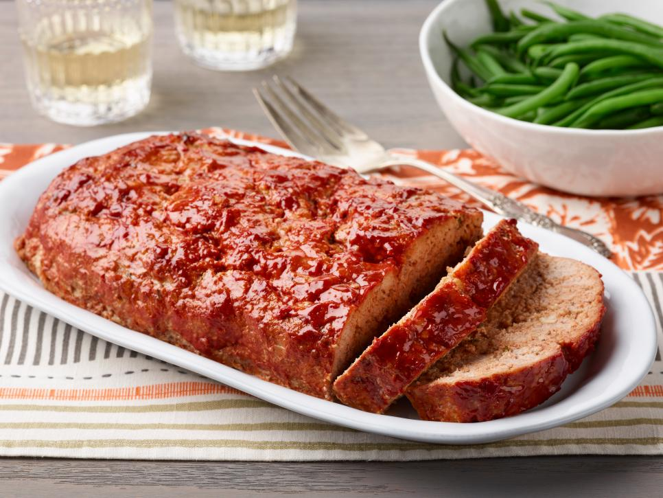

Turkey Meatloaf

Description:
A slightly lighter version of the all-American classic, this satisfying meatloaf uses chicken broth and soaked panko to stay moist, and a mix of fresh herbs for flavor. It’s the best turkey meatloaf you’ll find!
Ingredients:
- 1/4 cup olive oil
- 1 large onion, chopped
- 2 teaspoons fresh thyme leaves
- 1 teaspoon minced fresh sage
- Kosher salt and freshly ground black pepper
- 2 cloves garlic, grated
- 1 tablespoon tomato paste
- 3 tablespoons Worcestershire sauce
- 3/4 cup panko breadcrumbs
- 1/2 cup chicken broth
- 3 pounds ground turkey
- 2 large eggs
- 1/2 cup ketchup
Method:
- Preheat the oven to 425 degrees F. Line a baking sheet with foil.
- Heat the olive oil in a large skillet over medium heat. Add the onions, thyme, sage, 1 teaspoon salt and 1/2 teaspoon pepper. Cook, stirring often, until the onions are softened, about 10 minutes. Add the garlic and cook 1 minute more. Add the tomato paste and cook for 1 minute, stirring to incorporate. Stir in the Worcestershire. Remove from the heat and allow to cool.
- Add the panko to a large mixing bowl and pour over the chicken broth so the breadcrumbs soak up the liquid. Add the turkey, eggs, 2 teaspoons salt, 1/2 teaspoon pepper and the cooled onion mixture and mix well with your hands until well combined. Form the mixture into a 10-by-5-inch loaf on the foil-lined baking sheet. Coat the top and sides with the ketchup.
- Put the meatloaf in the oven and reduce the oven temperature to 350 degrees F. Bake until a thermometer inserted in the center of the loaf reads 165 degrees F, 45 minutes to 1 hour. Let cool slightly before slicing and serving.